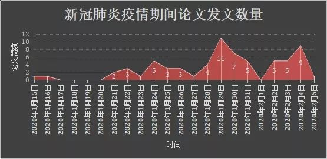
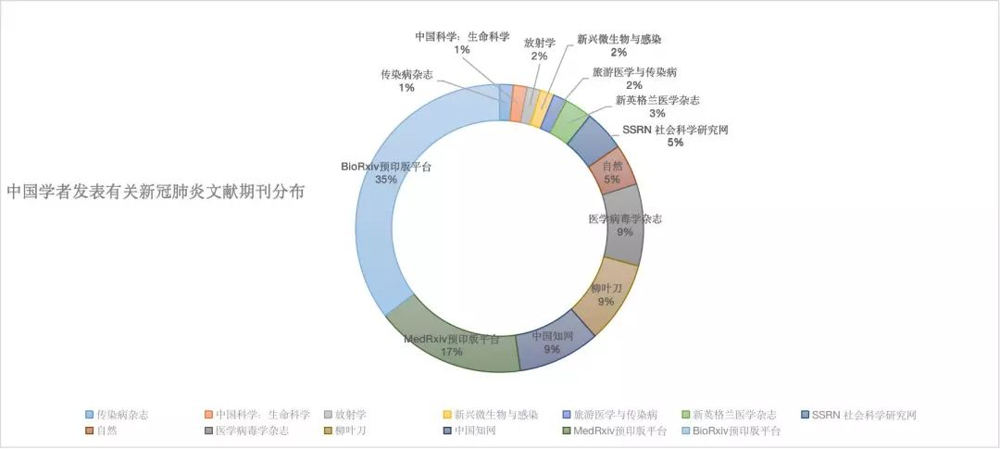
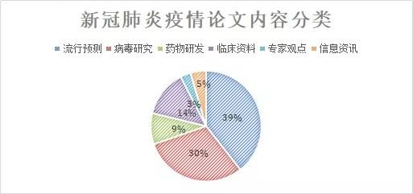

独家|石正丽回应质疑 专家一致认为新冠病毒非人造
原文链接 备份链接 【财新网】（记者 杨睿 冯禹丁 赵今朝）“阴谋论者不相信科学。我希望国家专业部门来调查，给我们一个清白。”中国科学院武汉病毒研究所研究员石正丽2月4日回复财新记者称，“我自己的话没有说服力，我不能控制别人的思想和言 …


*************▲*************（数据整理：南方周末记者周小铃、南方周末实习生叶梓。时间截止于2月5日）
全文共4521字，阅读大约需要10分钟。
自1月15日至2月5日，中国学者参与发表的新冠肺炎学术文章共66篇，平均每天发表3.1篇，参与研究人员总计590位。
内容上，对传染病流行预测的研究最集中，共有26篇文章；病毒分析的20篇；临床数据分析9篇；药物研发6篇。非研究论文的专家观点和信息资讯共有5篇。
SARS期间，2002年11月－2003年7月，在WebofScience和PubMed两个数据库上进行检索发现，前者的SARS相关文献2295篇，其中中国学者发表588篇，平均每天2.17篇；后者共680篇，中国学者占119篇，平均每天0.44篇。
本文首发于南方周末 未经授权 不得转载
文 | 南方周末记者 周小铃
南方周末实习生 叶梓
责任编辑 | 张玥
2020年2月9日，由国家卫健委高级别专家组组长、中国工程院院士钟南山领衔的“中国2019年新型冠状病毒感染的临床特征”研究，在预印本网站medRxiv上发表。
该研究对国内已确诊的1099例新冠肺炎患者的临床特征进行了回顾，其中仅1.18%的患者与野生动物有过直接接触，31.30%的患者去过武汉，71.80%的患者与来自武汉的人员接触过。并发现，新冠肺炎的中位潜伏期为3.0天（范围从0至24天），最长可达24天。
在此六天前，中共中央政治局常务委员会指出，要加大科研攻关力度，“战胜疫情离不开科技支撑”，要组织动员全国科研工作者参与疫情防控方面的科研攻关，推动相关数据和病例资料的开放共享。
据南方周末记者梳理，国际论文期刊数据库中最早一篇关于新冠肺炎的研究发表于2020年1月15日——来自浙江大学的一篇题为《检测人类呼吸道病毒感染的最新进展》的论文发表于《医学病毒学杂志》。
自1月15日至2月5日，中国学者参与发表的新冠肺炎学术文章共66篇，平均每天发表3.1篇，参与研究人员总计590位。这其中，11篇发表于国际顶级刊物。
而在SARS期间，2002年11月－2003年7月，在Web of Science和PubMed两个数据库上进行检索发现，前者的SARS相关文献2295篇，其中中国学者发表588篇，平均每天2.17篇；后者共680篇，中国学者占119篇，平均每天0.44篇。
1
2020年1月15日以来，国内外的中国学者关于新冠肺炎的论文数量逐渐增多，1月29日和2月4日达到最高峰，分别达到11篇和9篇。比如1月24日，全天发表5篇文章，其中4篇发布于国际顶级刊物。
南方周末记者查询的数据主要来源于中国科学院武汉文献情报中心推出的“2019-nCov”新型冠状病毒科研动态监测平台，以及中国知网、Elsevier、Wiley Online Library等期刊论文平台。
这66篇论文按照发布平台，可以分为两类，一类是正式发布于专业期刊的，有32篇；另外一类发布于BioRxiv预印版平台和MedRxiv预印版平台，34篇。
BioRxiv预印版平台是一个储存及发布医学类学术论文的平台。在该平台发表的论文未经同行评议，只要经过专业人员进行相关学术及非学术审查（如抄袭、明显错误等）后1-2天内，论文就会在网站上刊登。刊登后的论文有单一的电子标识符，可被检索和引用，后期亦不影响正式发表。MedRxiv预印版平台亦是医学研究论文预印本发布平台。
在正式发布的文章中，有11篇发布于全球顶级刊物，21篇发布于其他期刊杂志，这21篇依据发表数量排名为《医学病毒学杂志》（Journal of Medical Virology）、中国知网、SSRN社会科学研究网、《旅游医学与传染病》（Travel Medicine and Infectious Disease）、《新兴微生物与感染》（Emerging Microbes & Infections）、《病毒学杂志》（Journal of Virology）、《传染病杂志》（Journal of Infection）、《中国科学：生命科学》（SCIENCE CHINA Life Sciences）、《放射学》（Radiology）。

（数据整理：南方周末记者周小铃、南方周末实习生叶梓。时间截止于2月5日）
2
《新英格兰医学杂志》（NEJM）、《柳叶刀》（Lancet）、《美国医学会杂志》（JAMA）、《英国医学期刊》（BMJ）被称作全球“四大顶级医学期刊”。
在这66篇论文中，发表于这“四大顶刊”的共8篇，另有3篇发表于顶级科学杂志《自然》（Nature）。
其中《新英格兰医学杂志》2篇，均出自中国疾病预防控制中心。
《柳叶刀》6篇，有2篇的第一作者为武汉金银潭医院，2篇来自香港大学李嘉诚医学院，1篇的第一作者出自中国疾病预防控制中心，最后1篇通讯作者为中国工程院院士、中国医学科学院院长王辰和中国科学院院士、中国疾控中心主任高福以及英国牛津大学和美国弗吉尼亚大学的医学专家，是对武汉新冠肺炎事件的评论文章。
《自然》的3篇文章中，有两篇第一作者出自中国科学院武汉病毒研究所的石正丽团队，一篇的第一作者出自复旦大学上海公共卫生临床中心和公共卫生学院的张永振团队。值得一提的是，张永振教授也是中国疾控中心传染病研究所的研究员。
文章发表在顶级刊物上，对研究者而言意义不同。
根据2019年6月20日公布的最新SCI影响因子，不同期刊“影响因子”为：《新英格兰医学杂志》最高，70.67；其次是《柳叶刀》（59.1），《自然》（43.07），《传染病杂志》（5.099）、《病毒学杂志》（4.324），目前中国学者发表数量最多的《医学病毒学杂志》影响因子为2.049。
在学术研究领域，“影响因子”指期刊前两年发表的文献在当前年的平均被引用次数。影响因子越高，表明文章的被引用率越高，反映出该期刊发表的研究成果影响力越大，学术水准越高。
一位该领域的高校研究者对南方周末记者说，“《新英格兰医学杂志》是70个影响因子，分数很高，（作者所属单位）有的机构会奖励数万元。”
一位曾就职于国内顶尖三甲医院的业内人士说，发表论文是为了对科研成果进行说明和公布，而目前全球论文发表的数量和质量决定着科研成就。
她解释，如果能发表SCI文章，即被SCI（Scientific Citation Index，《科学引文索引》）收录的期刊所刊登的论文，基本上每个医疗机构都有明文规定奖励。
在一份顶级刊物中，也分有不同栏目。上述高校研究者举例，以《柳叶刀》为例，它的目录上有research paper（研究论文）、也有case report（案例汇报）。“目前疾控中心发表的不是科学研究，是案例汇报，也就是说‘掌握病人的治疗信息，把这个信息公布出去’，这也是文章。”
据其观察，在《科学》（Science）杂志中，研究论文不占主流，“案例汇报”“科学史回顾”和“广告”占60%。因为案例汇报是一手信息呈现，在审核上也会比研究论文快一些。
在新冠肺炎的突发疫情中，为了鼓励科研工作者尽快推出针对疫情的研究成果，1月22日，国家自然科学基金委员会启动了新冠肺炎研究专项，资助对此次疫情进行的研究项目，资助期2年，选择20个项目，每个项目资助150万。
次日，中国科技部启动了新冠肺炎疫情应急科研攻关项目，包括15位专家组成员，当天已有8个应急攻关项目启动，经费拨付到位。同日，中科院病毒所牵头，多院校联合，成立了13位专家组成的应急攻关专家组。
3
据南方周末记者计算，在这66篇文章中，参与的中国研究人员多达590位。据作者的所属单位，可分为高校、科研机构、疾控中心和医院四类。
其中，高校人数占比45%，涉及43所国内外高校；疾控中心其次，占20%，涉及国家、省、市、区各级疾控中心17个；医院占18%，武汉金银潭医院参与人数最多。研究机构占比17%。
高校和科研机构当中表现突出的是，中国科学院发表论文11篇、复旦大学参与发表论文8篇、香港大学9篇、首都医科大学3篇。

（数据整理：南方周末记者周小铃、南方周末实习生叶梓。时间截止于2月5日）
疾控中心在发表论文的人数和质量上，都很突出。
除了中国疾病预防控制中心外，此次发表新型冠状病毒论文的省市区级疾控中心达14家，省级包括湖北省、广东省、湖南省、贵州省、内蒙古疾控中心；市级包括武汉市、荆州市、成都市、安阳市、盘锦市、南昌市、咸阳市疾控中心；区级包括上海嘉定区、上海宝山区疾控中心；还有解放军疾控中心。
中国疾病预防控制中心（The Chinese Center for Disease Control and Prevention，简称“CDC”）成立于2002年，前身是中国预防医学科学院。《中国健康报》曾采访原中国疾控中心主任李立明，他提到组建中国CDC的目的是让研究人员以控制疾病和解决公共卫生问题为目的搞科研。
目前，各级疾控中心共参与发表了11篇英文文献。其中，有2篇发表于《新英格兰医学杂志》，2篇发表于《自然》，1篇发表于《柳叶刀》，1篇发表于SSRN社会科学研究网，其余5篇中，3篇发表于BioRxiv预印版平台，2篇发表于medRxiv预印版平台。各级疾控中心正式发表的6篇英文文献，均以手中所获得的一手患者数据为样本。
疾控中心的论文集中，一大优势是对数据的掌握。
一位公共卫生领域在读博士生告诉南方周末记者，她所在学院就有老师招募团队从网络上爬取数据写论文，“这属于有想法、没数据，只能辛苦地从网上获取数据。就看谁掌握了数据库”。
前述高校研究者说，中国暴发疫情，疾控中心必须第一时间汇报给WHO（世界卫生组织），“对于研究机构来说，公开数据的方式就是发表论文”。
4
从研究内容来看，这些论文中，在传染病流行预测、药物研发、病毒检测与基因分析、临床数据研究等方面都有所突破。
具体来看，对传染病流行预测的研究最集中，共有26篇文章；病毒分析的20篇；临床数据分析9篇；药物研发6篇。非研究论文的专家观点和信息资讯共有5篇。

（数据整理：南方周末记者周小铃、南方周末实习生叶梓。时间截止于2月5日）
在病毒基因分析方面，早在2020年1月10日，中国疾控中心、复旦大学公共卫生临床中心和公共卫生学院教授张永振通过GenBank公开了暴发于武汉的新型冠状病毒的基因组序列，以供研究人员下载、使用和分析，同时声明，如需发布使用数据的结果，需与其联系。
2020年1月22日，南开大学生命科学学院教授高山团队在使用张永振教授公开的基因组数据后，将研究结果发布在《生物信息学》期刊上，引发张永振教授不满，并要求其立即撤稿。
对此，高山回应南方周末记者，重大卫生公共事件中的数据需要共享，没有人拥有这些数据的所有权，而疾控中心需要在第一时间向社会公开。截至发稿前，张永振教授尚未回复南方周末记者的采访邮件。
备受关注的武汉病毒所石正丽团队最早的病毒基因分析文章1月23日发在BioRxiv预印版平台，由中科院病毒研究所、武汉市金银潭医院和湖北省疾控中心等机构共同署名，研究5个病人体内的病毒全基因序列溯源，研究结果表明，蝙蝠中的冠状病毒的序列一致性高达96%。
近日，一名印度研究人员在上述平台发表文章称，武汉新型冠状病毒棘突蛋白中含有四个特有的插入序列，其中有序列与艾滋病病毒相似，引发舆论猜疑，矛头直指武汉病毒所。
2月2日，石正丽回复南方周末记者短信称，“相信美国不良媒体造谣，相信印度无底线的科学家猜疑，不配我费口舌。”当日，石正丽亦在其朋友圈发表了类似观点，并转附印度学者撤稿消息。
次日，石正丽团队早先发表在BioRxiv预印版平台的研究成果，正式发表于《自然》，并提出这种新型冠状病毒与SARS-CoV使用相同的细胞进入受体ACE2（紧张素转化酶2）。
根据最新研究成果来看，目前对于病毒基因分析的讨论还没有得到充分回答，尤其是对于病毒传播中间宿主的分析仍没有明确答案。
此外，病毒源头等问题，答案仍然不清楚。
斯克里普斯研究所（Scripps Research Institute）的进化生物学家克里斯蒂安•安德森（Kristian Andersen）在《柳叶刀》上推测，存在感染者将病毒带至华南海鲜市场的可能性，即病毒可能诞生自其他场所，传播到华南海鲜市场，而后在该市场大规模暴发。在武汉首批41名患者中，有14例无华南海鲜市场接触历史。
同样，由中国多级、14家疾控中心发表于1月29日的论文显示，在2020年1月1日前发病的病例中，与华南海鲜批发市场相关的为55%。
在药物研究方面。2月4日，武汉病毒所最新研究发现，瑞德西韦（remdesivir）和氯喹（chloroquine）在体外控制2019-nCoV感染中有效。
据公开资料介绍，中国科学院武汉病毒研究所在1月21日申报了瑞德西韦（remdesivir）的中国发明专利（用途专利），针对抗2019新型冠状病毒的用途。并将通过PCT（专利合作协定）途径进入全球主要国家，但最终是否能够申请通过，还无法确定。
2月5日下午，据新华社消息，瑞德西韦在国家卫健委、国家药监局等多部门支持下，完成临床试验的注册审批工作，首批新型冠状病毒感染的肺炎重症患者将于2月6日试用该药。
对病毒的研究是艰难的。在《血疫》这本描述埃博拉病毒的非虚构名著中写道，“在生物学上，不存在百分之百肯定的事情，一切都那么复杂，一切都千头万绪，每当你以为自己搞懂了什么，剥开一层迷障，却发现地下还有更深一层的复杂结构。大自然和简单没什么关系。”
（南方周末记者高伊琛对本文亦有帮助）

征集

《南方周末》现向所有身处新冠肺炎一线的读者公开征集新闻线索。我们欢迎武汉及周边城市医患联系记者，提供防疫前线的一手资讯，讲述您的新春疫情见闻。若您不在武汉，但您身处之所也有与疫情相关的重要新闻线索，亦欢迎您与我们分享。疫情仍在蔓延，南方周末将执笔记录每位国人在疫情面前的希望与困境，与广大读者共同面对疫情。祝愿所有读者朋友们，新春平安。线索可直接给本篇文章留言，格式为：【线索】+内容+您的电话（绝对会对您的个人信息保密）
戳击下面图片 继续阅读专题


原文链接 备份链接 【财新网】（记者 杨睿 冯禹丁 赵今朝）“阴谋论者不相信科学。我希望国家专业部门来调查，给我们一个清白。”中国科学院武汉病毒研究所研究员石正丽2月4日回复财新记者称，“我自己的话没有说服力，我不能控制别人的思想和言 …
原文链接 备份链接 **记者/魏晓涵 ** 编辑/石爱华 宋建华 *同济医学院法医学系教授刘良* 1月9日，新冠肺炎出现首个死亡病例，截至2月14日13时，因新冠肺炎所致的死亡人数已达1381人。 “目前，一例病理解剖都没有”，同济医学院 …
原文链接 备份链接 作为中国疾控中心原副主任，杨功焕是坦诚的。多年国际组织和疾控系统工作的经验让她对新冠病毒疫情中萌生的一些问题更加敏感。 她认可武汉“封城”，对中国公共卫生硬实力有信心，但又不满新冠病毒疫情初期的反应迟缓，质疑公共卫生的 …
原文链接 备份链接 市场反馈认为，公共卫生事件对经济的影响有限；在应对疫情的关键时刻，政治和金融市场应对疫情展示出截然不同的态度 文 |《财经》特派记者 金焱 发自华盛顿 编辑 | 苏琦 2月11日，世界卫生组织通过社交媒体推特发布其确定 …
原文链接 备份链接 【财新网】（记者 徐路易）新冠病毒正式得名SARS-CoV-2，它引起的疾病则被正式命名为“COVID-19”。当地时间2月11日，国际病毒分类委员会（ICTV）发表声明，根据系统发育、分类学和已有的经验，冠状病毒研 …